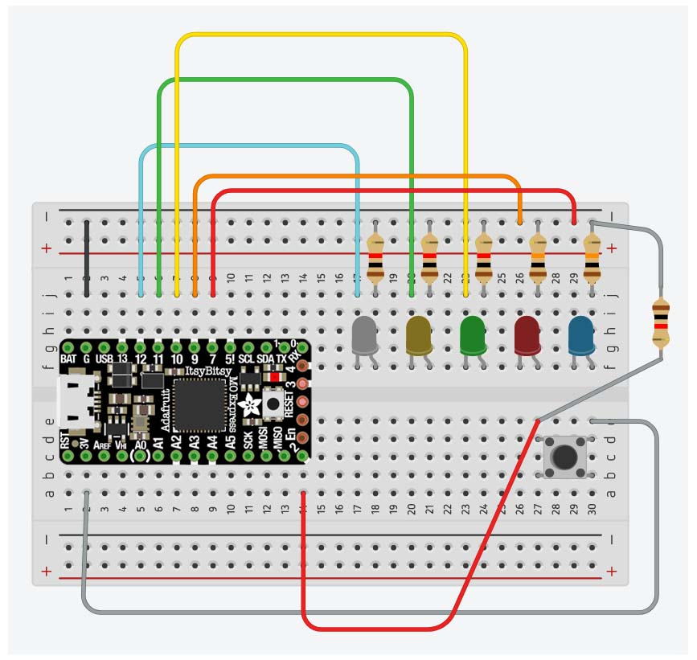

Alex iakovlev
← Go home
projects
final Project
contact
Week 4 : Arduino programming
whack-a-LED
LEVEL 1 DEmo
LEVEL 2 DEMO: random mode
Schematics

Created using
www.tinkercad.com
and
Adafruit's images
of the ItsyBitsy M4
CODE